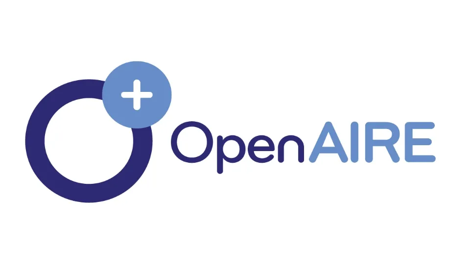

Министерство культуры и исламской ориентации
Официальный орган, ответственный за разрешение журнала
Официальная и проверяемая информация о статусе индексации журнала.
На этой странице публикуется информация о базах данных, службах реферирования и научных сервисах, в которых журнал «Исследования по русскому языку» официально принят для индексирования.
| База данных / сервис | Статус |
|---|---|
| Научные базы данных и сервисы индексирования | Подача заявок и развитие присутствия продолжаются |
Название базы данных или сервиса будет размещаться на этой странице только после получения официального подтверждения. Регистрация сайта журнала в общих инструментах поисковых систем сама по себе не означает включение журнала в специализированную научную или цитатную базу данных.
Ниже представлены официальные системы, научные сервисы и записи, связанные с журналом.
Официальный орган, ответственный за разрешение журнала

Официальная запись о регистрации и сертификате СМИ

Инфраструктура для поиска и связывания научных публикаций в открытом доступе

База для индексирования и доступа к содержанию научных журналов

Научная база индексирования и доступа к публикациям

Официальный профиль журнала в ResearchBib

Сервис научного поиска и обнаружения публикаций

Ресурс и сеть открытого доступа

Присутствие и доступ к материалам в сети

Индексирование

Лицензия на использование материалов
В этом списке представлены системы, сервисы и записи, связанные с журналом. При наличии ссылки ведут на соответствующие официальные сайты или страницы записей.